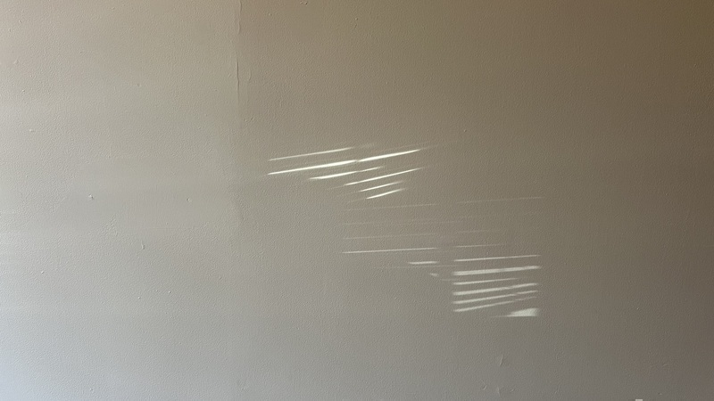
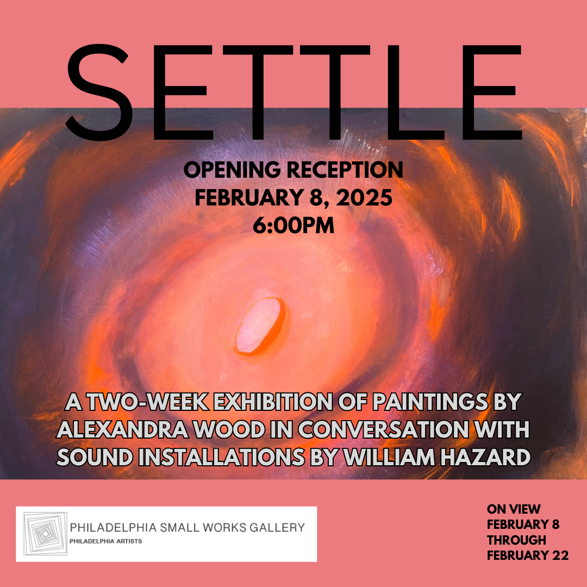

log

blurry process pic of me soldering a transducer for settle, a multimedia installation created in collaboration with Alexandra Wood at Philadelphia Small Works Gallery, opening tonight at 6pm. Thanks to Souha Yan for helping me source these transducers. Thanks to dani derks for helping me figure out the wiring. Thanks, also, to Zack Scholl, whose blog post on multichannel audio in supercollider on linux was very helpful, to Robbie Lyman for some last-minute code review, and to Ezra Buchla for writing a lovely piano sound in supercollider that I modified very slightly and repurposed for this piece.
process pic from settle, a multimedia installation created in collaboration with Alexandra Wood at Philadelphia Small Works Gallery, opening February 8th at 6pm


from settle, a multimedia installation created in collaboration with Alexandra Wood at Philadelphia Small Works Gallery, opening February 8th at 6pm

from things you might hear by Kelly Clare & Nora Claire Miller

you are cordially invited to join Alexandra Wood and me at Philadelphia Small Works Gallery for what is sure to be a memorable event on February 8th, 2025

from When We Look at Things We Steal their Color and Grow Heavy Under their Weight by Mike Bagwell

last night, I took out the trash while listening to "What's Up" by 4 Non Blondes. Today, I woke up with "No Below" by Speedy Ortiz stuck in my head.


[ former]
[further]
[final]
[first]
williamthazard [at] pm.me